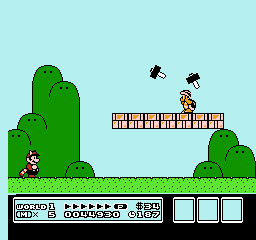
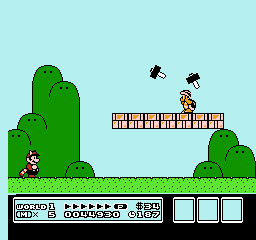

Joyaki
What is it?
Joyaki is a combination of the words “Takoyaki Joy Ride.” Takoyaki is a traditional Japanese street snack that looks like a cake pop with octopus pieces inside. In the game, a frozen takoyaki has had enough of being frozen and not getting cooked. Its depression and low temperature has turned it blue. In this adventure, it is trying to collect ginger pieces without getting cut open by kitchen knives. After collecting enough red ginger pieces, it gets an amazing flavour and is ready to fight the ultimate octoboss.
Photos from Unsplash.
Inspiration
This game was originally inspired by classic games like Mario and Flappy Bird to pay our respect to the real OGs.
 

Since this is a 3-month project, we have decided to go with a recreation of classic games with some creativity of our own. For the graphics, we have chosen a Japanese street food to be the main character because of our mixed cultural background and our love for food. Takoyaki was then picked because of its popularity in Asia and its really round shaped cuteness. The whole theme of the game is set to be a cooking environment to create a stronger connection between the player and the takoyaki. In our game, the player is the takoyaki.